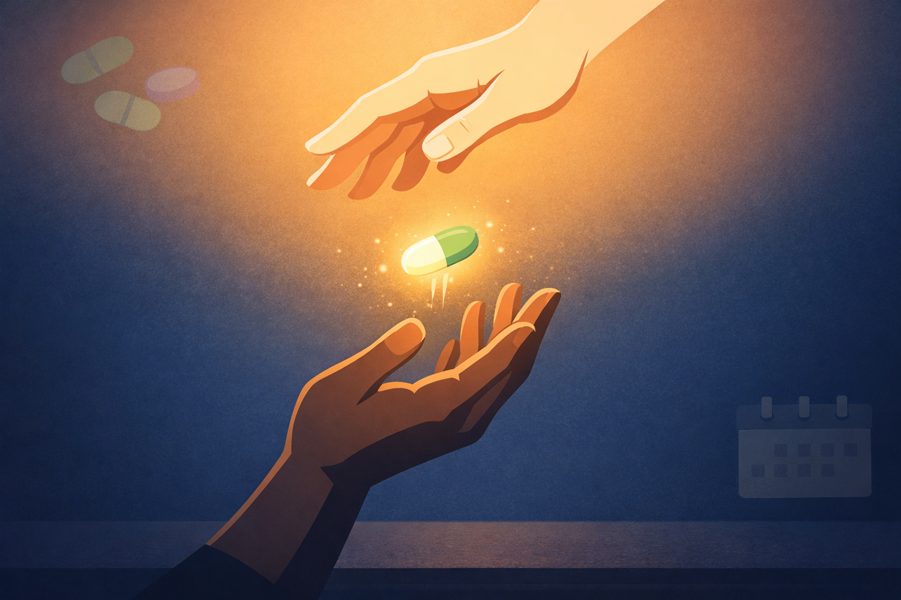

By Rustam Iuldashov
30 years lived experience with chronic migraine | Sources: 14 peer-reviewed and authoritative references including Headache (AHS position statement 2024), AMA Physician Survey (n=1,000), Migraine Meanderings patient survey (n=1,900+), Curr Pain Headache Rep | Last updated: March 2026
Important Notice: This article is for informational and educational purposes only and does not constitute medical, legal, or insurance advice. The author is not a licensed physician, attorney, or insurance specialist. Insurance coverage rules, state laws, and manufacturer programs change frequently — always verify current details with your insurer, your physician, and program providers directly. For medical emergencies, call 911 immediately.
Key Takeaways
- 64% of migraine patients face prior authorization — and nearly 80% say insurance interference directly worsens their attacks.[1]
- A denial is almost never final. Up to 50% of denied claims are overturned on appeal — but fewer than 1% of patients ever try.[2]
- Your migraine diary is your most powerful evidence. Date, severity, functional impact, medications tried, outcomes. Build it before you need it.
- Request a peer-to-peer review. Doctor-to-doctor conversation overturns denials that paperwork alone cannot.[6]
- Bridge programs exist for most major CGRP medications. Don’t suffer through an appeal unmedicated.[10]
- Know your state’s step therapy laws. 31 states have patient protections — cite them in your appeal.[12]
- The Patient Advocate Foundation Migraine Careline is free. Call 866-688-3625.[14]
The System Is Not Built to Help You
Your doctor prescribed Emgality. You left the appointment feeling, for the first time in years, genuinely hopeful.
Then the pharmacy called. Insurance denied it.
If that sentence lands somewhere specific in your chest — you are not alone. A joint survey of more than 1,900 migraine patients found that 64% had been through prior authorization battles, and nearly 80% said the interference made their attacks more frequent, more severe, or both.[1] In that same report, 74% said the obstruction worsened their disease over time — not just their mood, their actual disease.[1]
These are not administrative inconveniences. They are medical harms delivered in envelope form.
But here is what insurance companies count on: almost nobody fights back. Research shows up to 50% of denied claims can be overturned on appeal — yet fewer than 1% of patients ever challenge a denial.[2] That gap between what is possible and what people actually do is the most exploited space in American healthcare.
This article is your map through that space. Every obstacle named. Every lever you have the legal right to pull.
Five Tactics the Insurance Industry Uses to Wear You Down
Before you can fight, you need to know what you are fighting.
Prior Authorization (PA). Your insurer requires advance approval before covering a medication. Your doctor prescribes; the insurer reviews; and too often, the insurer denies. Nearly half of migraine patients wait more than a week for a decision.[1] Physicians now spend an average of 13 hours every single week navigating PA paperwork — and 93% of them say it causes measurable delays in patient care.[3] When your doctor’s staff is buried in forms, that is time not spent treating you.
Step Therapy — “Fail First.” You cannot have the medication your doctor chose until you have first tried and documented failure with cheaper alternatives. For CGRP inhibitors like Aimovig or Emgality, this typically means failing two older drugs — usually topiramate, amitriptyline, or propranolol — before the insurer will budge. Here is the problem: the American Headache Society’s 2024 position statement explicitly recognizes CGRP-targeting therapies as a first-line treatment option.[4] The insurer’s requirement is not evidence-based. It is cost-containment dressed as medicine.
Non-Medical Switching. Midyear, your insurer quietly pulls your stable medication from its formulary — usually because a pharmaceutical rebate deal shifted the economics — and substitutes a different drug. You were not consulted. Your doctor was not consulted. One patient described it this way: “The condition was stabilized. And then the insurance company drove me to a drug that’s less expensive. The switch prioritized their profit over my health.”[1]
Combination Therapy Denial. Evidence supports using Botox alongside CGRP monoclonal antibodies in hard-to-treat chronic migraine. The two drugs work on completely different mechanisms and non-overlapping targets.[5] Many insurers deny both simultaneously, calling the combination “experimental” — despite published clinical evidence that says otherwise. We’ll come back to exactly how to fight this specific denial near the end of this article.
AI-Generated Batch Denials. A 2025 American Medical Association report found that some insurers now deploy AI systems that produce automatic, batch denials with little or no human review — some generating denial rates up to 16 times higher than human reviewers.[3] The AMA President called it bluntly: medical decisions must be made by physicians and their patients, “without interference from unregulated and unsupervised AI technology.”[3] A boilerplate machine denial is far easier to overturn on appeal than a carefully reasoned medical judgment.
Your Most Powerful Weapon: The Migraine Diary
Before you call the insurer. Before you write an appeal letter. Before anything else — you need documentation.
A detailed migraine diary is the single most important asset in any insurance dispute. Insurance reviewers are trained to look for evidence of medical necessity. Your diary provides it in a format they cannot dismiss.
Track every attack: date, time, duration, pain severity on a 1–10 scale, symptoms present (nausea, aura, light sensitivity, cognitive fog), impact on daily function (missed work, unable to drive, bedridden), and medications taken along with how well they worked. Do this consistently for 30 to 90 days before any appeal.
This record serves three purposes. It establishes the frequency and severity of your condition in objective, dated terms. It documents failure of previous medications — exactly what step therapy protocols require as proof. And in the event of an external independent review, it becomes your most compelling evidence of functional impairment.[6]
A denial is rarely overturned by emotion. It is overturned by documentation. Your diary is your case file.
The Migraine Companion app was built for this. Every attack you log builds the medical record that protects your access to treatment.
How Prior Authorization Actually Works — And Where It Breaks
PAs fail for preventable reasons. The most common cause is not a malicious denial — it is incomplete paperwork. The prescriber’s office submitted a vague diagnosis code, skipped a required question, or answered “no” because they could not find the specific answer in your chart.[7]
Ask your doctor’s office to confirm that the following appear in your clinical notes — because the insurer will ask for them:
A cumulative medication list: every migraine drug you have tried, with the dose, how long you took it, and the specific reason you stopped — “ineffective after 3 months at maximum dose” carries far more weight than “didn’t work.” A precise ICD-10 diagnosis code — not a catch-all like “headache disorder” but the exact code for your migraine subtype. Your disability score: insurers like Cigna explicitly require documented “at least moderate disability” — a MIDAS score of 11 or higher, or a HIT-6 score above 50 — before approving CGRP therapies.[8] And confirmation that Medication Overuse Headache has been ruled out, which many plans ask about specifically for CGRP monoclonal antibodies.[7]
If your situation is urgent — if your doctor can certify that waiting would seriously jeopardize your health — you have the right to request an expedited review. Expedited reviews require a decision within 24 hours.[9] Most patients do not know this. Most never ask.
The Appeal Ladder: How to Climb It
A denial is not a verdict. It is the opening bid in a negotiation you are legally entitled to pursue.
Rung 1: Read the denial letter carefully. It must state the specific reason for denial, the policy used to justify it, your appeal rights, and the deadline. Miss the deadline — typically 65 to 180 days — and you forfeit your rights entirely.[9]
Rung 2: Get a Letter of Medical Necessity. Your neurologist writes a letter explaining, in clinical terms, why this specific medication is medically necessary for you — not for migraine patients generally, but for your history, your failed treatments, your documented disability. The letter should cite the 2024 AHS position statement on CGRP therapies[4] and name every alternative tried and failed, with documented reasons. The stronger and more specific the letter, the harder it is to deny.[6]
Rung 3: Request a Peer-to-Peer Review. This is the most underused and most often decisive tool in the appeal process. Your physician calls the insurance company’s medical reviewer directly. Doctor to doctor. They cannot dismiss clinical arguments from another clinician speaking in specific medical terms the same way they dismiss a written form.[6] Push your doctor’s office to request one — it often takes a single phone call to change the outcome.
Rung 4: Escalate inside the company. If the first internal appeal is denied, resubmit. Each resubmission moves the case to a higher-level reviewer. Keep records of every interaction: date, time, representative’s name, reference number. Insurers count on exhaustion — persistent, documented patients are their least favorite cases.
Rung 5: Demand an External Independent Review. If internal appeals fail, you have the legal right in most states to have your case reviewed by an independent third-party organization — one with no financial relationship with your insurer. External reviewers overturn a substantial proportion of migraine-related denials, because the clinical evidence for CGRP treatments is strong.[2]
📋 Appeal Letter Template
Copy this template, fill in the highlighted fields, and give it to your neurologist to use as the basis for their Letter of Medical Necessity. Customize the clinical details for your specific situation.
Bridge Programs: You Don’t Have to Wait to Feel Better
You should not suffer for months while an appeal crawls through the system. Manufacturer patient assistance programs exist precisely to fill this gap. As of 2025, active programs include:[10]
- Aimovig (Amgen) — The Aimovig Ally™ Bridge-to-Coverage program provides free medication for up to 12 doses while PA is being pursued. Once coverage is established, commercially insured patients pay as little as $5/month (max benefit $3,500/year).
- Emgality (Lilly) — Eligible commercially insured patients may pay as little as $0 for up to 12 months via the Emgality Savings Card.
- Ajovy (Teva) — Commercially insured patients may pay $0 via a manufacturer savings coupon.
- Nurtec ODT (rimegepant) — Eligible commercially insured patients pay as little as $0/month via the Nurtec ODT Patient Savings Program.
- Qulipta (atogepant) — Savings card available for commercially insured patients.
- Botox (AbbVie) — Savings program created to help commercially insured patients with out-of-pocket costs not covered by insurance.
Important: None of these programs are available to patients on Medicare, Medicaid, or other federal programs. Contact manufacturers directly, or ask your neurologist’s office about starter kits while your PA processes.
Watch for copay accumulators. Some insurers refuse to count manufacturer coupon savings toward your deductible or out-of-pocket maximum. When the coupon runs out, you may suddenly owe far more than expected.[11] Ask your pharmacist directly: “Does my plan use a copay accumulator or copay maximizer?” If yes, factor this into your budget planning from day one.

The Legal Landscape: Rights You Already Have
Thirty-one states have passed step therapy exception laws requiring insurers to grant exceptions under specific circumstances.[12] The law typically requires your insurer to bypass step therapy if: you have already tried and failed the required drug; the required drug is contraindicated for your medical situation; delaying treatment would cause irreversible harm; or the required drug would prevent you from performing daily activities or doing your job.
If your state has one of these laws, cite it by name in your appeal. Your insurer’s legal team knows about it, even if the representative you spoke to does not.
If you have employer-sponsored insurance through a self-insured plan, state laws may not apply to you — because federal ERISA law largely preempts state regulation of these plans.[12] The Safe Step Act (H.R. 2630 / S. 652) — backed by 233 House cosponsors and 45 Senate cosponsors as of 2024 — would extend these protections to the roughly 100 million Americans currently left without them.[13] Advocating for this legislation is not abstract politics. For many people, it is the direct difference between access and denial.
When the bureaucracy becomes genuinely overwhelming, the Patient Advocate Foundation’s Migraine Careline offers free one-on-one case management. They know this system. They will walk you through it step by step: patientadvocate.org/migrainematters, or call 866-688-3625.[14]
The Combination Therapy Battle
One of the most infuriating denials is the refusal to cover Botox alongside a CGRP monoclonal antibody simultaneously. Insurers typically call the combination “experimental” or “duplicative.” Both arguments are clinically unsupported.
Botox acts on peripheral trigeminal nerve terminals and sensory neuropeptide release. CGRP monoclonal antibodies work systemically by blocking the CGRP protein in circulation. These are non-overlapping mechanisms targeting different parts of the same pathological cascade.[5] For patients with hard-to-control chronic migraine, addressing multiple pathways simultaneously is not a luxury — it is sound pharmacology. Published evidence confirms better outcomes with combination therapy for patients who have not achieved adequate control with either agent alone.[5]
If you are denied combination therapy, the appeal strategy is the same as above — but with one critical addition. Ask your neurologist to document the specific, individualized medical rationale for needing both agents: your history, your failed monotherapy trials, your documented response to each drug alone. Generic statements do not win these appeals. Specificity does.
Combination Therapy Appeal: Three Non-Negotiables
1. Individualized rationale — Your neurologist documents your specific failed monotherapy history, not a generic statement about the drug class.
2. Mechanism argument — Include a brief clinical note explaining the non-overlapping mechanisms of action (peripheral vs. systemic CGRP pathway targets).
3. Peer-to-peer review — This is exactly the case where doctor-to-doctor conversation wins over paperwork alone. Push for it.
⚠️ Seek Emergency Care Immediately If…
An insurance dispute should never delay emergency treatment. Go to the emergency room immediately — regardless of authorization status — if you experience: a sudden “thunderclap” headache (the worst headache of your life, peaking within seconds); a new headache with fever and stiff neck; a headache with neurological symptoms (facial drooping, arm weakness, sudden vision loss, or difficulty speaking); or a headache following head trauma.
These are neurological emergencies. Do not wait for insurance approval. Do not let cost concerns override a potentially life-threatening symptom. Call 911 or go directly to your nearest emergency room.
Key Takeaways
- 64% of migraine patients face prior authorization — and nearly 80% say insurance interference directly worsens their attacks.[1]
- A denial is almost never final. Up to 50% of denied claims are overturned on appeal — but fewer than 1% of patients ever try.[2]
- Your migraine diary is your most powerful evidence. Date, severity, functional impact, medications tried, outcomes. Build it before you need it.
- Request a peer-to-peer review. Doctor-to-doctor conversation overturns denials that paperwork alone cannot.[6]
- Bridge programs exist for most major CGRP medications. Don’t suffer through an appeal unmedicated.[10]
- Know your state’s step therapy laws. 31 states have patient protections — cite them in your appeal.[12]
- The Patient Advocate Foundation Migraine Careline is free. Call 866-688-3625.[14]
⚕️ Important Medical & Legal Disclaimer
This article is written by Rustam Iuldashov, a patient with 30 years of personal experience living with migraine. It is intended for educational and informational purposes only and does not constitute medical, legal, or insurance advice.
Insurance coverage rules, state step therapy laws, and manufacturer assistance programs change frequently — always verify current details directly with your insurer, your physician, and program providers. Information in this article reflects conditions as of March 2026.
For complex insurance disputes involving denied coverage for ongoing treatment, consider consulting a patient advocate, a healthcare attorney, or your state’s insurance commissioner’s office. If you are experiencing a medical emergency, call 911 immediately.
References & Further Reading
Cited in text
- Migraine Meanderings; The Headache & Migraine Policy Forum. “Insurance Delays and Denials Impact Patient Access to Migraine Treatment.” migrainemeanderings.com. 2024. Survey report. n=1,900+.
- Kaiser Family Foundation. “Denied Health Insurance Claims Analysis.” KFF Health News. 2024. Policy analysis. National sample.
- American Medical Association. “Prior Authorization Physician Survey 2024.” AJMC / AMA press release, February 2025. Survey. n=1,000 physicians.
- Charles AC, Digre KB, Goadsby PJ, et al. “Calcitonin gene-related peptide-targeting therapies are a first-line option for the prevention of migraine: American Headache Society position statement update.” Headache. 2024;64(4):333–341. doi:10.1111/head.14283. Expert consensus.
- Virtual Headache Specialist. “Navigating Insurance Denials for Migraine Medications and Treatments.” virtualheadachespecialist.com. Updated 2023. Clinical analysis.
- Association of Migraine Disorders. “Your Guide to Migraine Treatment Appeals, Savings Programs, and Discount Pharmacy Services.” migrainedisorders.org. July 2025. Clinical review.
- Gibb V. “How to Get Prior Authorizations for Migraine Medications Approved.” Association of Migraine Disorders. January 2026. Clinical tips article.
- Cigna. “Migraine – Qulipta Prior Authorization Policy.” Cigna National Formulary Coverage Policy. 2025. Clinical policy document.
- American Migraine Foundation. “Migraine and Insurance: Your Questions Answered.” americanmigrainefoundation.org. February 2025. Resource review.
- National Headache Foundation. “Patient Assistance Programs and Savings Cards.” headaches.org. 2025. Resource guide.
- Haven Headache. “One Sneaky Trick Your Health Insurance Company Doesn’t Want You to Know About.” havenheadache.com. 2024. Patient resource.
- National Psoriasis Foundation / Step Therapy Coalition. “Step Therapy Legislation By State.” steptherapy.com. 2024. Policy analysis.
- U.S. Congress. “Safe Step Act, H.R. 2630 / S. 652, 118th Congress.” congress.gov. 2023–2024. Federal legislation text.
- Patient Advocate Foundation. “Migraine Matters.” patientadvocate.org. 2024. Resource guide and careline.
Further Reading
- Ailani J, Burch RC, Robbins MS. “The American Headache Society Consensus Statement: Update on integrating new migraine treatments into clinical practice.” Headache. 2021;61(7):1021–1039. doi:10.1111/head.14153. Expert consensus.
- Masurkar PP, Goswami S. “Marginal health care expenditures and health-related quality of life burden in patients with migraine.” J Manag Care Spec Pharm. 2024;30(10):1149–1159. doi:10.18553/jmcp.2024.30.10.1149. Retrospective cross-sectional. n=1,143,972.
- Perkins A, et al. “Perceptions of prior authorization burden and solutions.” Health Affairs. 2024. PMC11425057. Cross-sectional survey. n=1,005 patients + 1,010 providers.
- Moskatel LS, Zhang N. “The Role of Step Therapy in the Treatment of Migraine.” Curr Pain Headache Rep. 2023;27(10):571–577. doi:10.1007/s11916-023-01155-w. Narrative review.
- Burch R. “Chronic migraine in adults.” JAMA. 2025;333(5):423–424. doi:10.1001/jama.2024.24936. Clinical review.

How We Create Content
- Peer-reviewed and authoritative sources only. Headache (AHS position statements), AMA physician surveys, KFF Health News, Curr Pain Headache Rep, J Manag Care Spec Pharm, Health Affairs, JAMA, patient advocacy organization data.
- Source transparency. Study design and sample sizes noted for all clinical references. DOI links provided.
- Experience + Science. 30 years personal migraine experience combined with peer-reviewed evidence.
- Regular updates. Insurance policies and programs change frequently — articles reviewed when significant changes occur.
- No conflicts of interest. No funding from any pharmaceutical company, insurance company, or legal service provider.
Build the Evidence Before You Need It
Migraine Companion helps you log every attack with dates, severity, symptoms, medications tried, and functional impact — exactly the documentation that wins insurance appeals. Export your diary data and bring it to your neurologist’s office ready to use.
Last reviewed: March 2026
Next scheduled review: September 2026